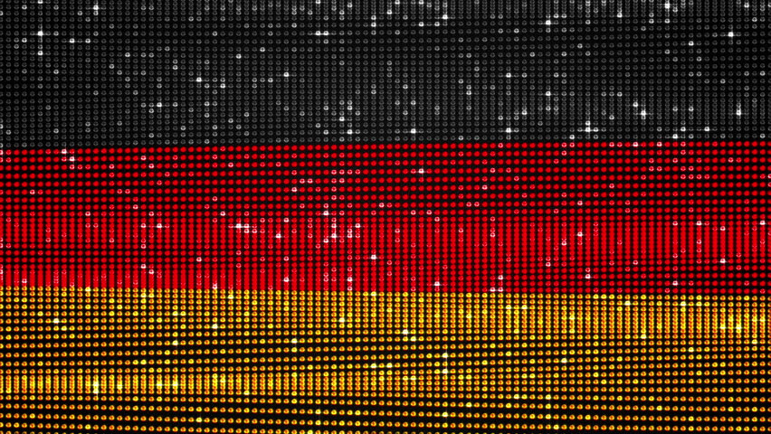

Be+LED
 Input your text, to let it run on the device shown below. The text repeats until another text will be sent. It will change when you press the "Change"-Button. You can use special symbols and commands between brackets #3 {}. They are listed below. |
 Gib deinen Text ein, um ihn auf dem unten gezeigten Gerät durchlaufen zu lassen. Der Text wiederholt sich so lange, bis ein anderer Text eingegeben wurde. Der aktuelle Text wird ersetzt, sobald Du die "Change"-Schaltfläche drückst. Mit geschweiften Klammern {} kannst Du spezielle Symbole anzeigen und Befehle ausführen. Sie sind unten aufgelistet. |
||
|
|||
[BILD Geraet/IMAGE Device] [Bild Standort/Image Location] [Gegenbild Standort/Counter-Image Location]
Actual Text [refresh]: Please wait...(Maybe the server is not running.)